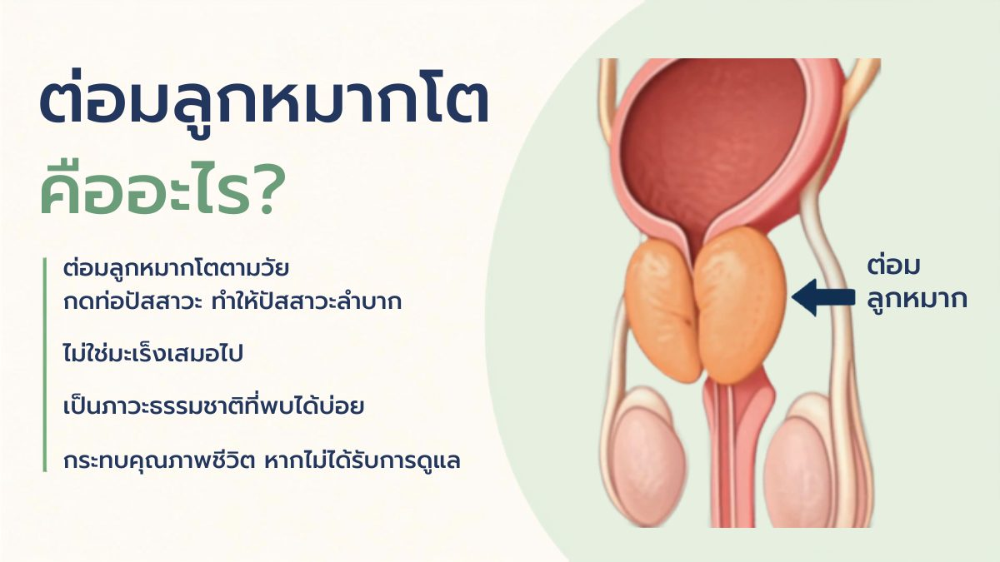
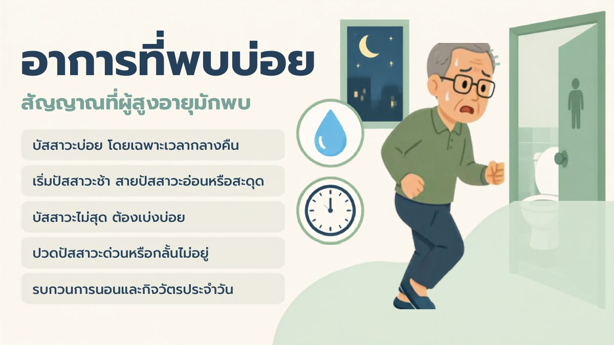
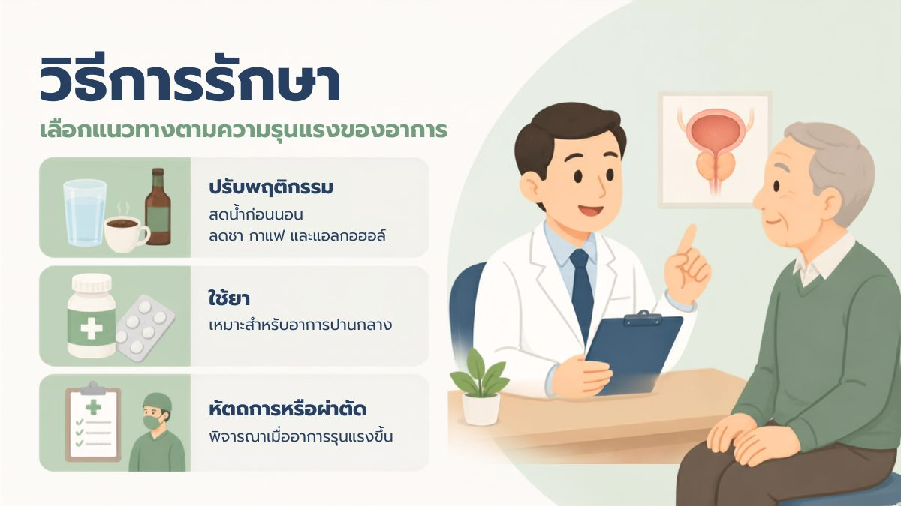
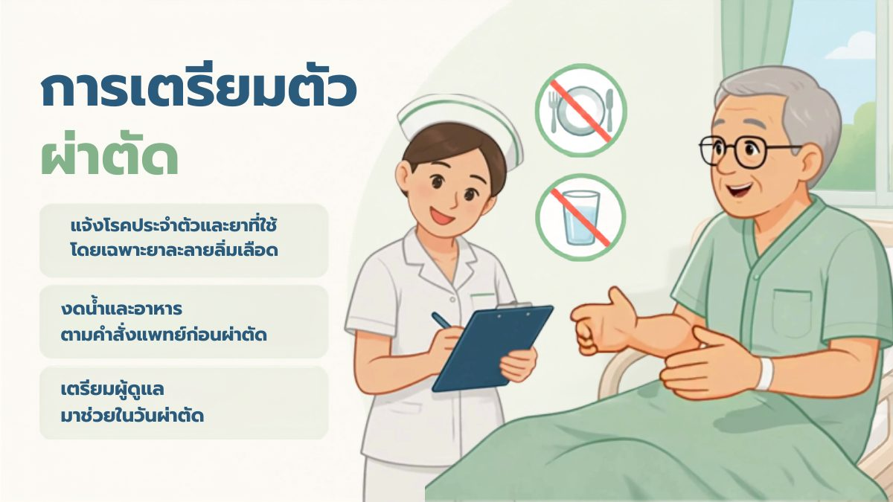
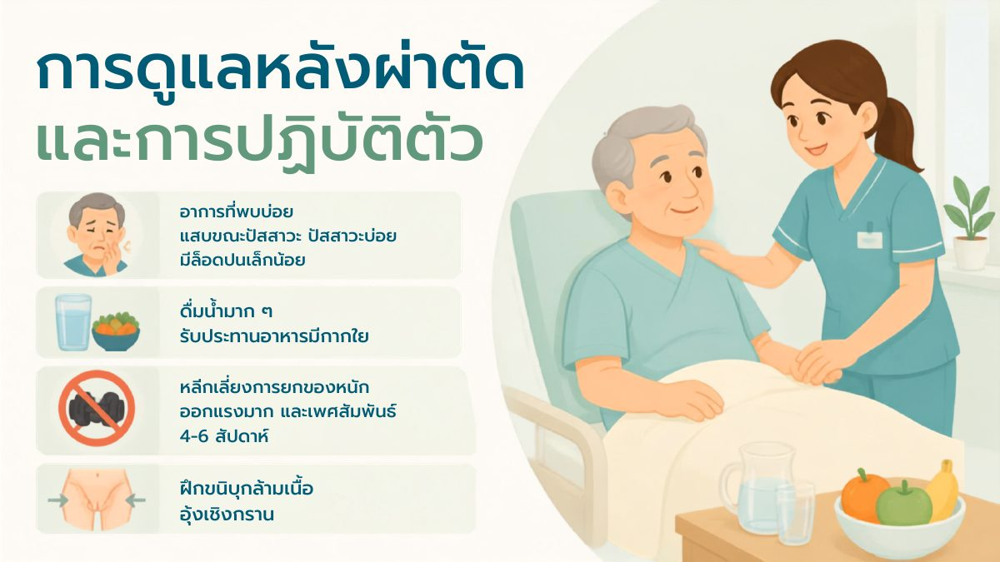
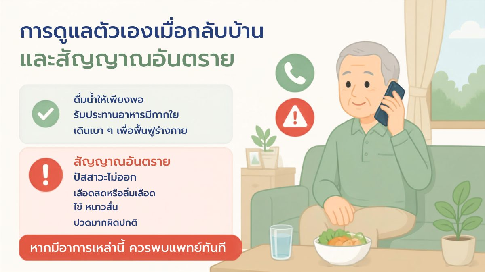
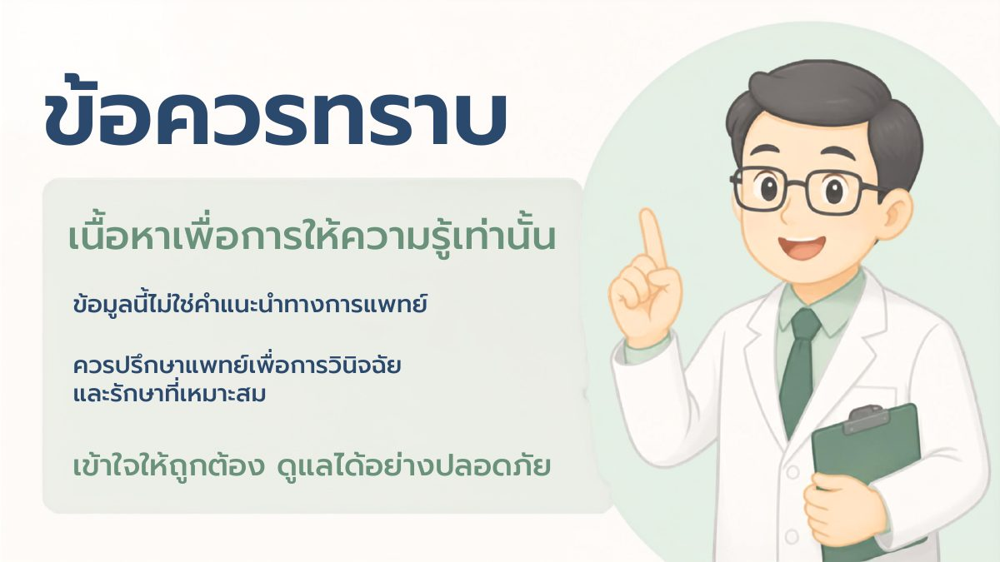

ต่อมลูกหมากโตคืออะไร?
- ต่อมลูกหมากโตตามวัย กดท่อปัสสาวะ ทำให้ปัสสาวะลำบาก
- ไม่ใช่มะเร็ง เป็นภาวะธรรมชาติที่พบได้บ่อย
- กระทบคุณภาพชีวิต หากไม่ได้รับการดูแล
อาการที่พบบ่อย
- ปัสสาวะบ่อย โดยเฉพาะเวลากลางคืน
- เริ่มปัสสาวะช้า สายปัสสาวะอ่อนหรือสะดุด
- ปัสสาวะไม่สุด ต้องเบ่งบ่อย
- ปวดปัสสาวะด่วนหรือกลั้นไม่อยู่
- รบกวนการนอนและกิจวัตรประจำวัน
วิธีการรักษา (ตามความรุนแรงของอาการ)
- ปรับพฤติกรรม งดน้ำก่อนนอน ลดชา กาแฟ และแอลกอฮอล์
- ใช้ยา เหมาะสำหรับอาการปานกลาง
- หัตถการหรือผ่าตัด พิจารณาเมื่ออาการรุนแรงขึ้น
การเตรียมตัวผ่าตัด
- แจ้งโรคประจำตัวและยาที่ใช้ โดยเฉพาะยาละลายลิ่มเลือด
- งดน้ำและอาหารตามคำสั่งแพทย์ก่อนผ่าตัด
- เตรียมผู้ดูแลมาช่วยในวันผ่าตัด
การดูแลหลังผ่าตัดและการปฏิบัติตัว
- ขณะนอนโรงพยาบาลหลังผ่าตัด จะใส่สายสวนปัสสาวะไว้ประมาณ 3 วัน
- อาการที่พบได้: แสบขณะปัสสาวะ ปัสสาวะบ่อย มีเลือดปนเล็กน้อย
- ดื่มน้ำมาก ๆ รับประทานอาหารที่มีกากใย ป้องกันท้องผูก
- ห้ามยกของหนักเกิน 5 กิโลกรัม หลีกเลี่ยงการออกแรงมาก และงดเพศสัมพันธ์ 4–6 สัปดาห์
- ฝึกขมิบกล้ามเนื้ออุ้งเชิงกราน
การดูแลตัวเองเมื่อกลับบ้าน
- ดื่มน้ำให้เพียงพอ
- รับประทานอาหารที่มีกากใย
สัญญาณอันตราย ควรพบแพทย์ทันที
- ปัสสาวะไม่ออก
- มีเลือดสดหรือลิ่มเลือดในปัสสาวะ
- ไข้ หนาวสั่น
- ปวดมากผิดปกติ
สไลด์ความรู้ (แตะเพื่อขยาย)







วิดีโอ
เอกสารดาวน์โหลด
ดาวน์โหลดแผ่นพับความรู้เรื่องต่อมลูกหมากโต (PDF)มีข้อสงสัย ติดต่อ หอผู้ป่วยศัลยกรรมทางเดินปัสสาวะ ตกแต่ง แผลไฟไหม้ โรงพยาบาลพุทธชินราช พิษณุโลก โทร 055-270-300 ต่อ 1846, 18406, 18407